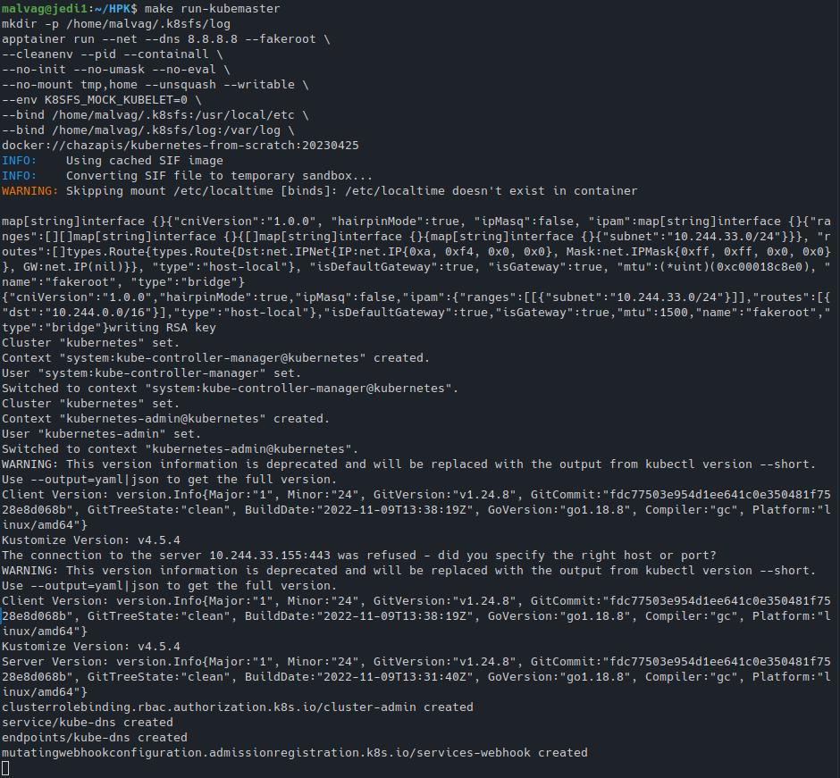
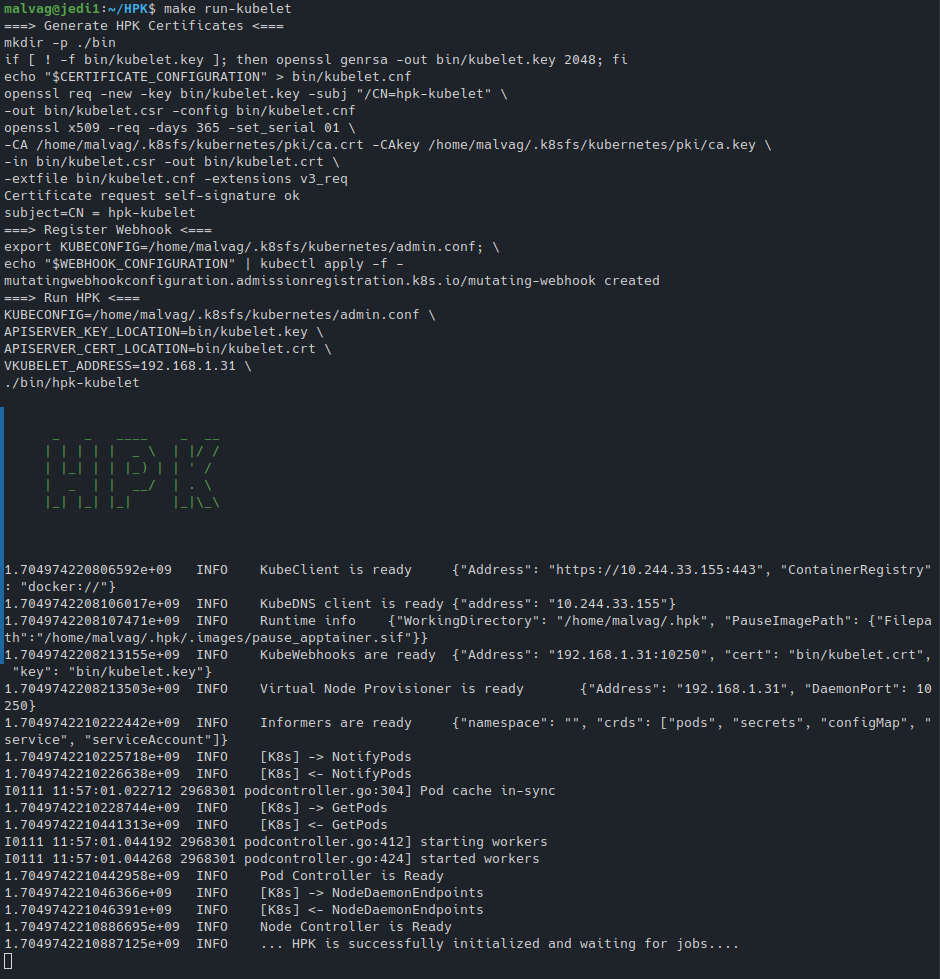
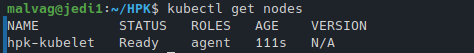
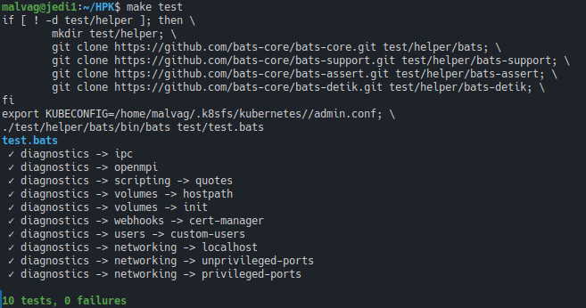

Admin Guide
In this tutorial, we'll walk you through the setup process to get HPK up and operational.
Tested on Ubuntu 20.04, CentOS 7.
Requirements
| Variable | Version |
|---|---|
| APPTAINER_VERSION | 1.1.4 |
| FLANNEL_VERSION | 0.20.2 |
| FLANNEL_CNI_PLUGIN_VERSION | 1.1.2 |
| KUBERNETES_VERSION | 1.24.8 |
| HELM_VERSION | 3.10.3 |
Set environment variables:
APPTAINER_VERSION=1.1.4
FLANNEL_VERSION=0.20.2
FLANNEL_CNI_PLUGIN_VERSION=1.1.2
KUBERNETES_VERSION=1.24.8
HELM_VERSION=3.10.3
HOST_ADDRESS=$(ip route get 1 | sed -n 's/.*src \([0-9.]\+\).*/\1/p')
SLURM_CONFIG=/etc/slurm/slurm.conf
ETCD_ADDRESS=`cat ${SLURM_CONFIG} | grep SlurmctldHost | awk -F '[()]' '{print $2}'`
Install wget utility:
if [[ "$(. /etc/os-release; echo $ID)" == "ubuntu" ]]; then
apt-get update
apt-get install -y wget
else
yum install -y wget
fi
Install etcd
On one host
We use etcd, a key-value store that will be used by flannel later.
Setup etcd service and fire it up:
if [[ "$HOST_ADDRESS" == "$ETCD_ADDRESS" ]]; then
if [[ "$(. /etc/os-release; echo $ID)" == "ubuntu" ]]; then
apt-get install -y etcd-server etcd-client
cat >>/etc/default/etcd <<EOF
ETCD_LISTEN_CLIENT_URLS="http://${HOST_ADDRESS}:2379"
ETCD_ADVERTISE_CLIENT_URLS="http://${HOST_ADDRESS}:2379"
EOF
else
yum install -y etcd
sed -i "s/localhost:2379/${HOST_ADDRESS}:2379/" /etc/etcd/etcd.conf
fi
systemctl enable etcd
systemctl restart etcd
export ETCDCTL_API=3
etcdctl --endpoints http://${HOST_ADDRESS}:2379 put /coreos.com/network/config '{"Network": "10.244.0.0/16", "Backend": {"Type": "vxlan"}}'
fi
Install Apptainer
On all hosts
if [[ "$(. /etc/os-release; echo $ID)" == "ubuntu" ]]; then
wget -q https://github.com/apptainer/apptainer/releases/download/v${APPTAINER_VERSION}/apptainer_${APPTAINER_VERSION}_amd64.deb
wget -q https://github.com/apptainer/apptainer/releases/download/v${APPTAINER_VERSION}/apptainer-suid_${APPTAINER_VERSION}_amd64.deb
apt-get install -y ./apptainer_${APPTAINER_VERSION}_amd64.deb ./apptainer-suid_${APPTAINER_VERSION}_amd64.deb
rm -f apptainer_${APPTAINER_VERSION}_amd64.deb apptainer-suid_${APPTAINER_VERSION}_amd64.deb
else
wget -q https://github.com/apptainer/apptainer/releases/download/v${APPTAINER_VERSION}/apptainer-${APPTAINER_VERSION}-1.x86_64.rpm
wget -q https://github.com/apptainer/apptainer/releases/download/v${APPTAINER_VERSION}/apptainer-suid-${APPTAINER_VERSION}-1.x86_64.rpm
yum install -y epel-release
yum install -y fuse2fs
yum install -y ./apptainer-${APPTAINER_VERSION}-1.x86_64.rpm ./apptainer-suid-${APPTAINER_VERSION}-1.x86_64.rpm
rm -f apptainer-${APPTAINER_VERSION}-1.x86_64.rpm apptainer-suid-${APPTAINER_VERSION}-1.x86_64.rpm
echo "user.max_user_namespaces=15000" > /etc/sysctl.d/90-max_user_namespaces.conf
sysctl -p /etc/sysctl.d/90-max_user_namespaces.conf
fi
Install Flannel
On all hosts
Flannel runs a small, single binary agent called flanneld on each host, and is responsible for allocating a subnet lease to each host out of a larger, preconfigured address space. Flannel uses either the Kubernetes API or etcd directly to store the network configuration, the allocated subnets, and any auxiliary data (such as the host's public IP). Packets are forwarded using one of several backend mechanisms including VXLAN and various cloud integrations.
To install:
if [[ "$(. /etc/os-release; echo $ID)" == "ubuntu" ]]; then
apt-get install -y nscd # https://github.com/flannel-io/flannel/issues/1512
fi
wget -q https://github.com/flannel-io/flannel/releases/download/v${FLANNEL_VERSION}/flanneld-amd64
chmod +x flanneld-amd64
cp flanneld-amd64 /usr/local/bin/flanneld
rm -f flanneld-amd64
Now setup the flannel service and fire it up:
cat >/etc/systemd/system/flanneld.service <<EOF
[Unit]
Description=flannel daemon
[Service]
ExecStart=/usr/local/bin/flanneld -etcd-endpoints http://${ETCD_ADDRESS}:2379 -ip-masq
Restart=always
[Install]
WantedBy=multi-user.target
EOF
systemctl daemon-reload
systemctl enable flanneld
systemctl start flanneld
Configure Apptainer to use flannel as a CNI plugin
On all hosts
First we download and install Flannel binary
wget -q https://github.com/flannel-io/cni-plugin/releases/download/v${FLANNEL_CNI_PLUGIN_VERSION}/flannel-amd64
chmod +x flannel-amd64
cp flannel-amd64 /usr/libexec/apptainer/cni/flannel
rm -f flannel-amd64
Then we configure Apptainer to use Flannel as a CNI plug-in for fakeroot runs
cat > /etc/apptainer/network/40_fakeroot.conflist <<EOF
{
"cniVersion": "1.0.0",
"name": "fakeroot",
"plugins": [
{
"type": "flannel",
"delegate": {
"isDefaultGateway": true
}
},
{
"type": "firewall"
},
{
"type": "portmap",
"capabilities": {"portMappings": true},
"snat": true
}
]
}
EOF
In case there is a problem using these CNI plugins as a regular user you can additionally setup apptainer with the following:
cat >>/etc/apptainer/apptainer.conf <<EOF
allow net users = <??>
allow net groups = <??>
allow net networks = bridge, flannel
EOF
Install Utilities
- Kubectl utility with the same version as the Kubernetes
wget -q https://dl.k8s.io/v${KUBERNETES_VERSION}/bin/linux/amd64/kubectl
chmod +x kubectl
cp kubectl /usr/local/bin/kubectl
rm -f kubectl
- Helm utility
wget -q https://get.helm.sh/helm-v${HELM_VERSION}-linux-amd64.tar.gz
tar -zxvf helm-v${HELM_VERSION}-linux-amd64.tar.gz --strip-components=1 linux-amd64/helm
cp helm /usr/local/bin/helm
rm -f helm helm-v${HELM_VERSION}-linux-amd64.tar.gz
HPK Installation & Setup
Back to the head node, as the local user:
git clone https://github.com/CARV-ICS-FORTH/HPK.git
cd HPK
# Download the hpk-kubelet binary (adjust the version in the URL)
wget https://github.com/CARV-ICS-FORTH/HPK/releases/download/v0.1.0/hpk-kubelet_v0.1.0_linux_amd64.tar.gz
tar -zxvf hpk-kubelet_v0.1.0_linux_amd64.tar.gz
mkdir -p bin
mv hpk-kubelet bin/
Run each of the following in a separate window:
make run-kubemaster
make run-kubelet
Running the above commands, respectively: 

And you are all set:
export KUBE_PATH=~/.k8sfs/kubernetes/
export KUBECONFIG=${KUBE_PATH}/admin.conf
kubectl get nodes

Test
To test that everything is running correctly:
make test
